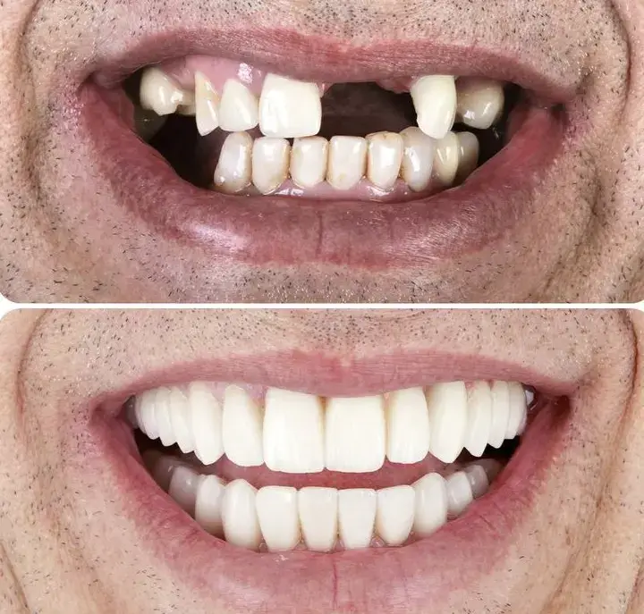
01 ReabilitaçãoImplantes Dentários
Recupere a função mastigatória e a estética do sorriso com implantes de alta precisão em Palhoça.
Planejamento 3D, cirurgia guiada e prótese provisória no mesmo dia.
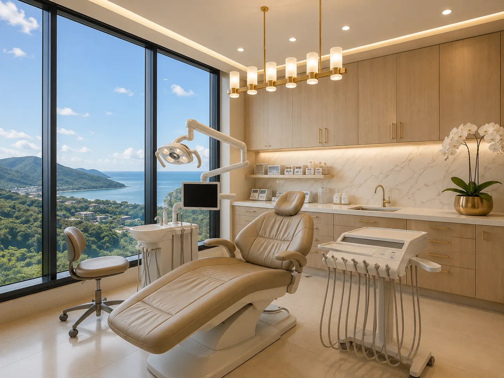
Você entende cada etapa, vê a simulação do resultado e só então decide. Atendimento com planejamento 3D, cirurgia guiada e avaliação inicial detalhada — para você entender o tratamento antes de decidir.
"Ambiente moderno, cuidado humano e precisão técnica."
Implantes, estética, ortodontia e mais com planejamento digital em Palhoça.
Da prevenção à reabilitação completa.

01 ReabilitaçãoRecupere a função mastigatória e a estética do sorriso com implantes de alta precisão em Palhoça.
Planejamento 3D, cirurgia guiada e prótese provisória no mesmo dia.
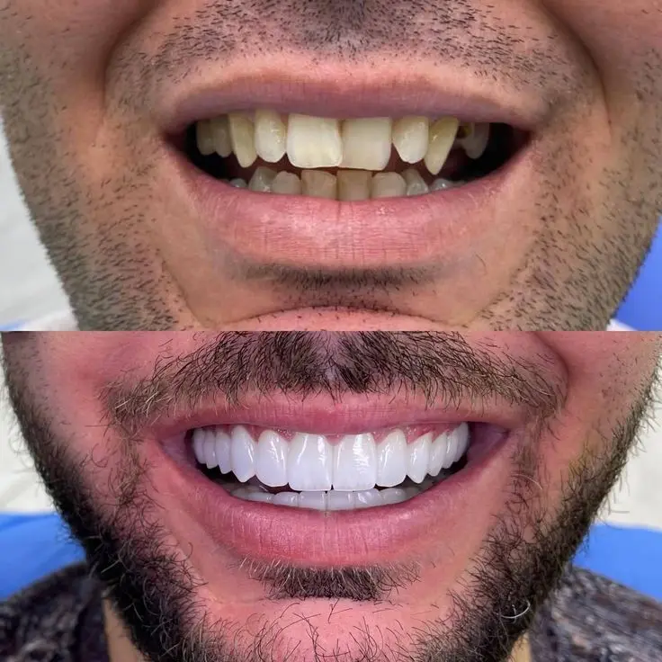
02 SorrisoLentes, facetas e clareamento para transformar seu sorriso com naturalidade em Palhoça.
Planejamento facial, mock-up digital e resultado natural garantido.
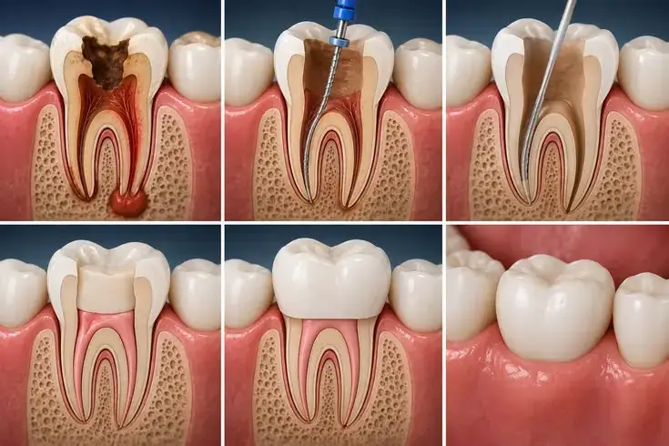
03 AlinhamentoInvisalign e aparelho fixo para alinhar seus dentes com conforto e discrição.
Simulação 3D, escaneamento intraoral e primeiro alinhador em até 3 semanas.
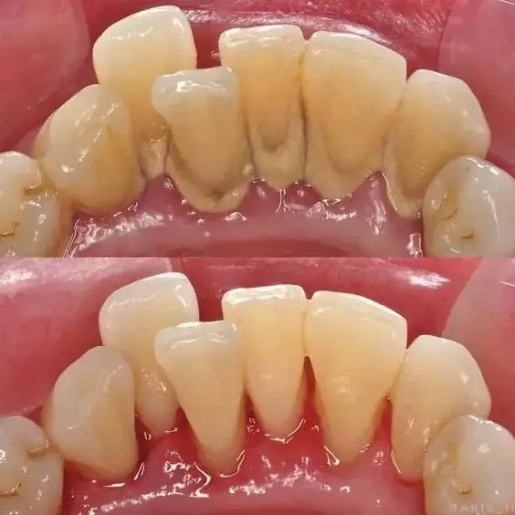
04 PrevençãoPrevenção, limpeza, restaurações e manutenção da saúde bucal para toda a família.
Atendimento humanizado, diagnóstico precoce e orientação personalizada.
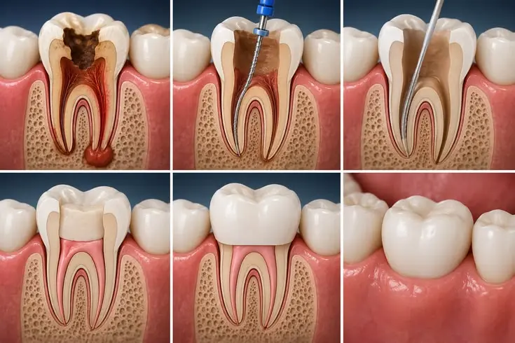
05 SalvamentoTratamento de canal com microscopia e tecnologia digital para salvar seus dentes.
Procedimento confortável, preciso e com recuperação rápida.
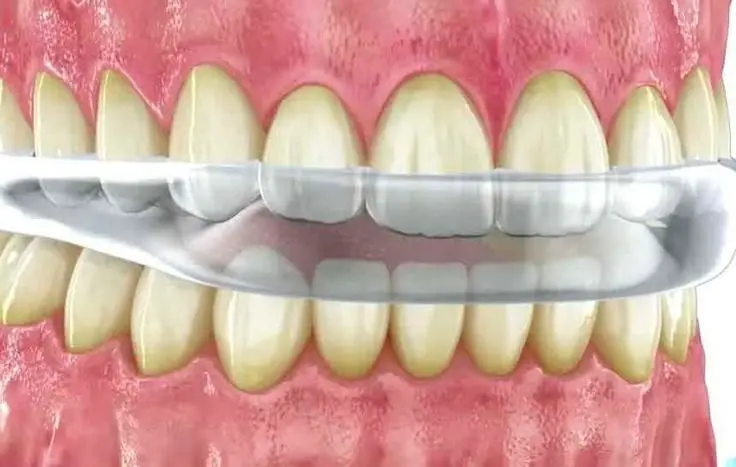
06 Bem-estarTratamento especializado para dores na face, cabeça e desgaste dental em Palhoça.
Diagnóstico preciso e abordagem multidisciplinar para alívio dos sintomas.
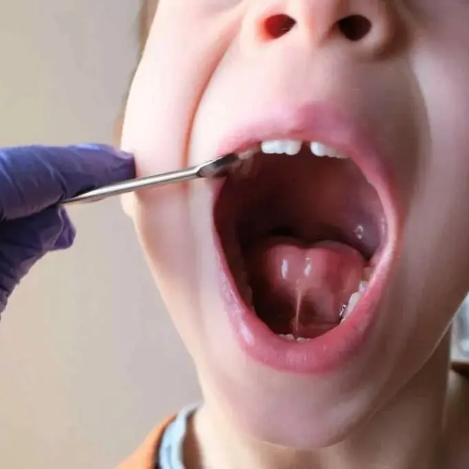
07 InfânciaCuidado especializado para crianças, com abordagem lúdica e preventiva.
Primeira consulta a partir dos 6 meses. Orientações para toda a família.
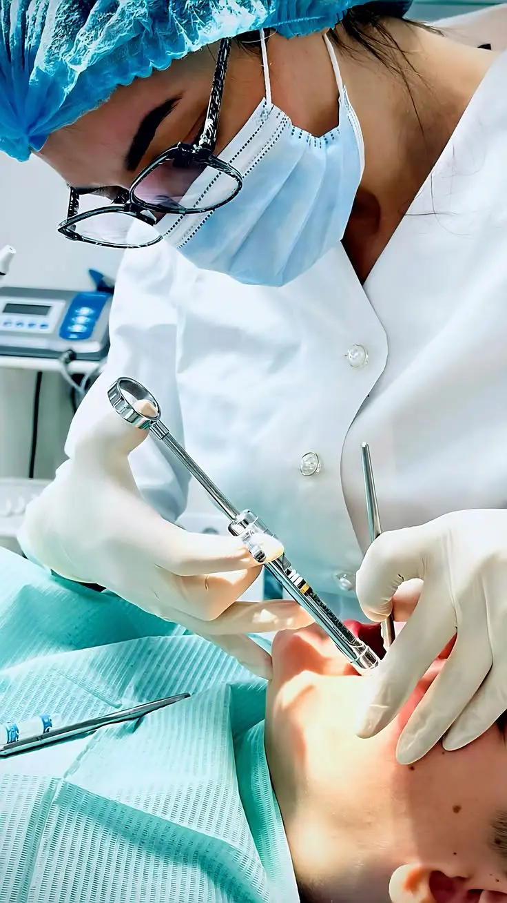
08 PrecisãoExtrações, sisos e procedimentos cirúrgicos com segurança e conforto.
Técnicas minimamente invasivas e acompanhamento pós-operatório.
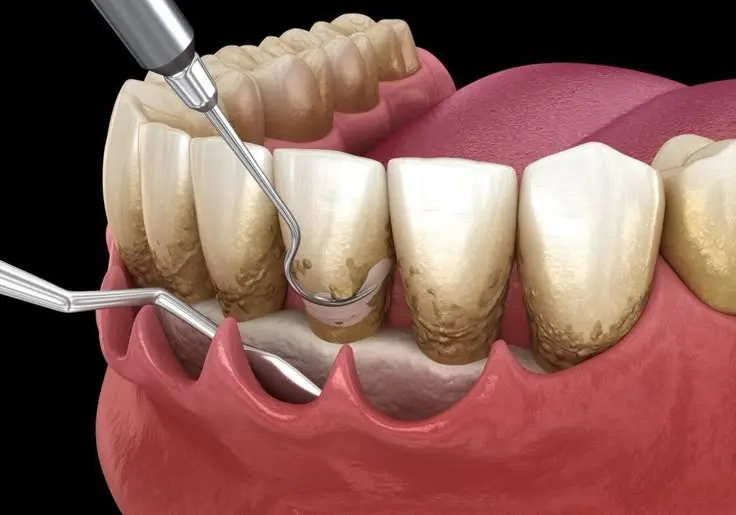
09 Saúde GengivalTratamento de gengivite, periodontite e gengivoplastia estética.
Cuidado especializado para saúde oral duradoura e sorriso harmonioso.
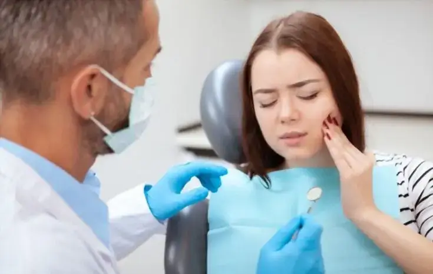
10 Atendimento ImediatoDores agudas, fraturas e traumas com atendimento rápido e eficaz.
Pronto atendimento em Palhoça para alívio da dor e tratamento definitivo.
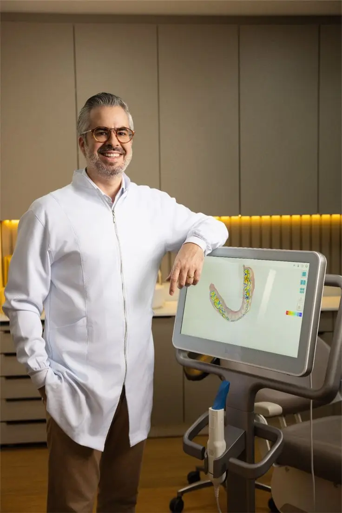
Não vendemos pacote. Não abrimos boca sem exame. Não chamamos de "urgência" o que pode esperar uma segunda opinião.
O tratamento começa quando você entende exatamente o que vai acontecer, quanto custa e por que faz sentido para o seu caso.
Você vê o resultado antes de começar. Tomografia, escaneamento intraoral e simulação precisa do seu novo sorriso.
Saiba mais sobre planejamento 3D →Uma hora dedicada a você. Entendemos seu histórico, medos e prioridades. Sem lista de procedimentos empurrados.
Saiba mais sobre nossa consulta →5 anos de garantia formal. Todo trabalho protético tem garantia por escrito, com revisões semestrais incluídas.
Saiba mais sobre garantia →Cada caso é único e conduzido com planejamento digital 3D, garantindo previsibilidade e naturalidade.
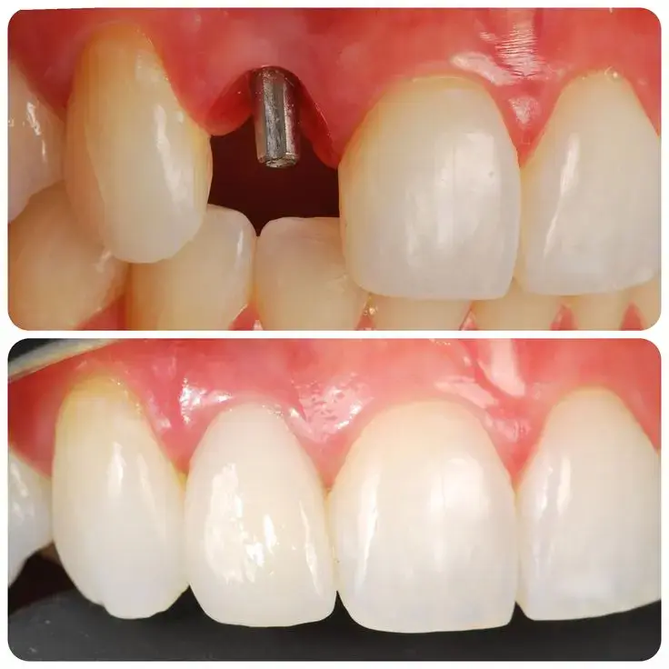
 Implante
Implante
Implante unitário
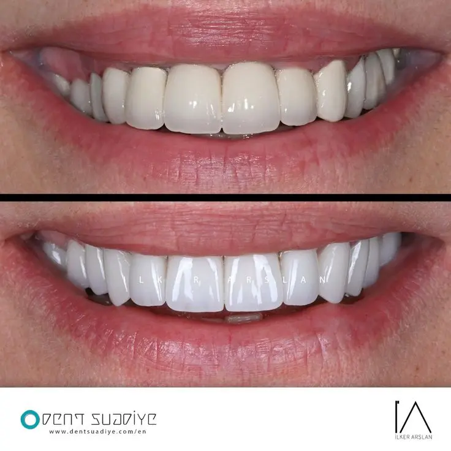
 Estética
Estética
Lente de contato
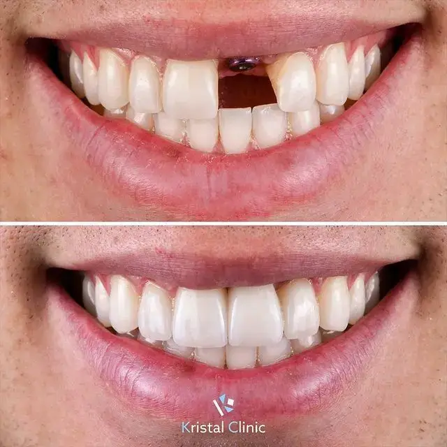
 Reabilitação
Reabilitação
Prótese sobre implante
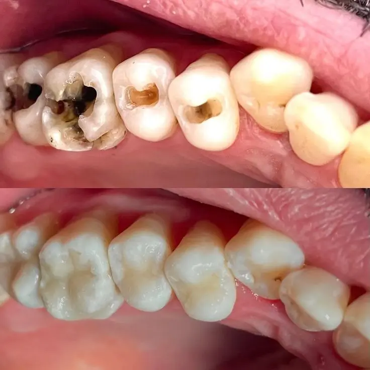
 Completo
Completo
Reabilitação total
Não encontrou sua pergunta? Manda pelo WhatsApp — quem responde é a equipe clínica, não um bot.
Não trabalhamos com convênios odontológicos. Emitimos nota fiscal e recibo detalhado que a maioria dos planos de saúde de reembolso aceita.
A avaliação inicial (60 minutos) custa R$ 280. Se você seguir com o tratamento, esse valor entra como crédito na primeira etapa.
Tomografia, escaneamento intraoral e simulação do resultado final antes de qualquer procedimento. Você vê seu novo sorriso em 3D antes de decidir.
O procedimento é com anestesia local. No pós-operatório, desconforto leve nos primeiros dias, controlado com analgésicos simples.
Com cuidados adequados, um implante bem planejado pode durar décadas — muitas vezes a vida toda. Garantia de 5 anos e acompanhamento semestral.
Exame clínico, escuta do seu histórico e três possibilidades de tratamento por escrito. Se não fizer sentido, você sai com a segunda opinião — sem custo de continuidade.